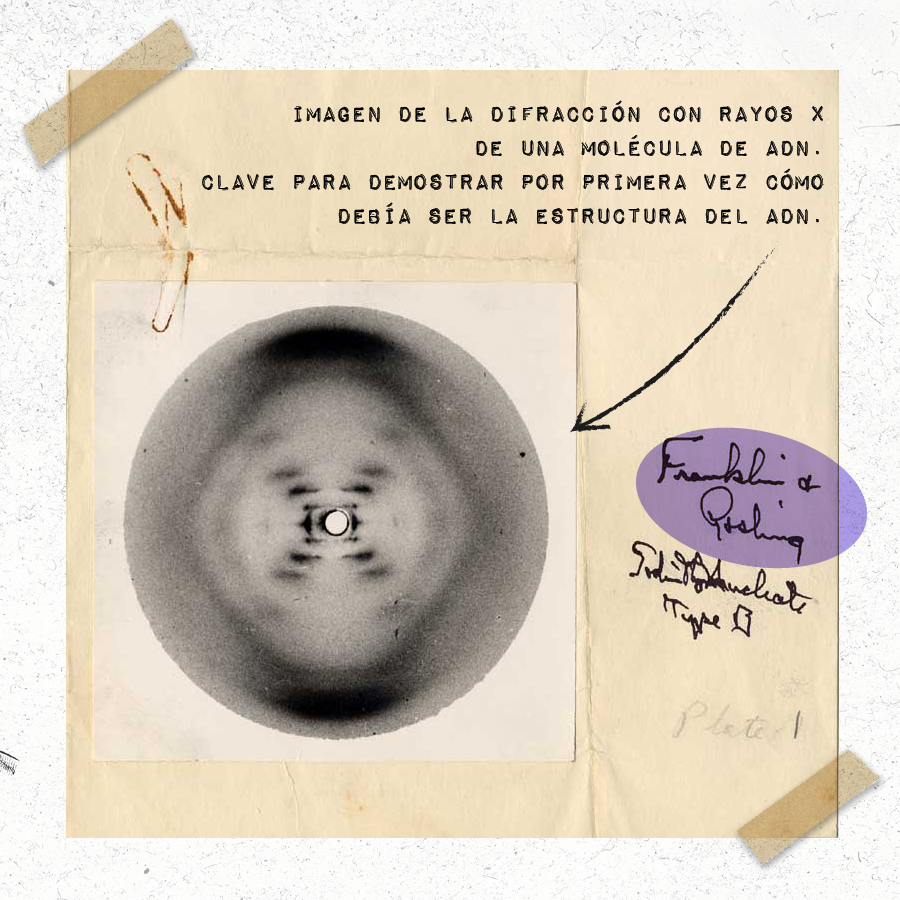
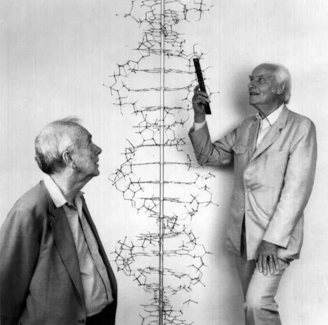

La carrera por la Estructura de la Vida
Inglaterra, a principios de la década de 1950. Tras la Segunda Guerra Mundial, la investigación científica estaba en plena ebullición. Mientras los físicos habían descifrado los misterios del átomo, los biólogos se enfrentaban a un enigma aún más profundo: ¿Cómo se transmite la información hereditaria de generación en generación?
Ya se sabía que el ADN (ácido desoxirribonucleico) era el material genético responsable de la herencia, gracias a los trabajos de Avery, MacLeod y McCarty años atrás. Sin embargo, su estructura tridimensional exacta seguía siendo un misterio absoluto.
Comprender la arquitectura estructural del ADN no era un mero capricho estético; era la llave maestra para entender el mecanismo funcional de la vida. Como se sospechaba en aquella época, la forma de la molécula debía forzosamente revelar cómo lograba copiarse a sí misma para transmitir la herencia. La carrera por descubrirla estaba liderada por los mejores laboratorios del mundo, principalmente el célebre Linus Pauling en California, el King's College en Londres y el Laboratorio Cavendish en Cambridge. Se trataba tanto de una búsqueda genuina del conocimiento puro, como de una encarnizada competencia impulsada por egos y anhelos de Premios Nobel.
Modelos teóricos vs. Datos empíricos
El rompecabezas de las cuatro bases
Había varias piezas de evidencia dispersas y aparentemente desconectadas. Ya se sabía que el ADN contenía cuatro bases nitrogenadas: Adenina, Timina, Citosina y Guanina, junto a fosfatos y azúcares. La anomalía residía en cómo ensamblar matemáticamente estos componentes geométricos sin violar las leyes de los enlaces moleculares.
Además de la estructura atómica restrictiva, estaba el descubrimiento de Erwin Chargaff (1950): la cantidad de Adenina siempre igualaba a la de Timina, y la de Citosina a la de Guanina (las célebres Reglas de Chargaff). Este dogma cuantitativo ocultaba una verdad arquitectónica inmensa, que la ciencia intentaba desesperadamente cristalizar visualmente.
El prestigioso Linus Pauling había publicado un modelo precipitado postulando una "triple hélice" para el ADN, con los fosfatos amontonados hacia adentro y las bases nitrogenadas hacia afuera. Franklin, sabiendo empíricamente que la molécula era altamente hidrófila (absorbe enorme cantidad de agua), argumentó contundentemente que los fosfatos atraen el líquido y, por tanto, debían encontrarse de forma obligatoria expuestos en la envoltura exterior de la molécula, blindando e invisibilizando a las bases nitrogenadas en el esqueleto central.
Dialéctica entre Teoría y Evidencia
La Fotografía 51 de Rosalind Franklin
En mayo de 1952, tras cientos de horas de exposición geométrica con rayos X, Rosalind Franklin y su estudiante Raymond Gosling obtuvieron un patrón de difracción de una fibra extremadamente fina de ADN (Forma B). A esta imagen de nitidez inaudita se la conoció luego como la Fotografía 51.

Acorde a su filosofía inductivista, Franklin se negó rigurosamente a publicar un modelo teórico audaz basado en esa única foto hasta haber completado los engorrosos cálculos analíticos correspondientes para estar completamente segura; su ética matemática detestaba la especulación irresponsable.
El asalto teórico de Watson y Crick (1953)
A espaldas de Franklin, su colega Maurice Wilkins le mostró furtivamente la Fotografía 51 a James Watson. Al ver la simétrica cruz negra formada por las manchas concéntricas de difracción, el entrenamiento geométrico interpretativo de Watson hizo click de inmediato: empíricamente, el patrón dictaba una hélice inequívoca.

Impulsados enérgicamente por esta revelación robada del cajón investigativo de Franklin, Watson y Crick volvieron frenéticos a sus placas de metal. Esta vez colocaron los fosfatos hacia afuera del esqueleto (como había deducido Franklin empíricamente tiempo atrás) y enlazaron las bases simétricamente usando las reglas de Chargaff adentro de la estructura protectora (A coincide unida maravillosamente con T, y C con G). Todo el intrincado caos genético finalmente se ordenó en una maravillosa estructura química de doble hélice estéticamente impecable, publicándolo en la prestigiosa revista Nature en 1953 y modificando la biología.
Decodificando el mérito en la ciencia
En 1962 (nueve años luego del hallazgo molecular), James Watson, Francis Crick y Maurice Wilkins compartieron el aclamado Premio Nobel de Fisiología. Rosalind Franklin, cuyo asidero empírico fue el insumo primario irreemplazable pero que estuvo ausente en tan monumental reconocimiento histórico, había fallecido fatalmente por un grave cáncer de ovario en 1958, a la truncada edad de 37 años. Aunque las reglas suecas imposibilitan los galardones póstumos, mientras ella aún laboraba activamente, su contribución indispensable fue duramente marginada, invisibilizada y socavada por los protagonistas de la trama.
El drama de la doble hélice ejemplifica magistralmente cómo la "victoria teórica hipotecaria" consigue tragar comúnmente en la historia el enorme crédito primigenio del minucioso, lento y sucio trabajo del banco experimental que posibilitó la deducción; manifestando también de forma indeleble de qué manera los abrumadores prejuicios patriarcales permean hasta lo más profundo del objetivismo científico decidiendo externamente a la racionalidad la autoría intelectual final de las ideas.